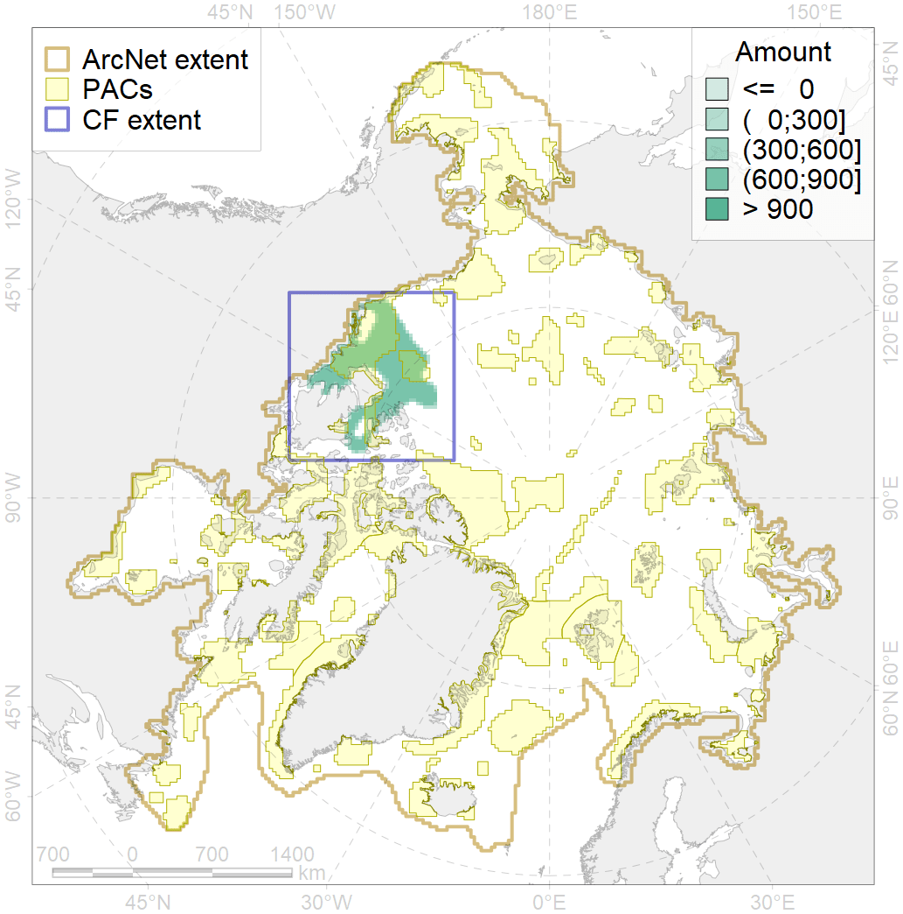
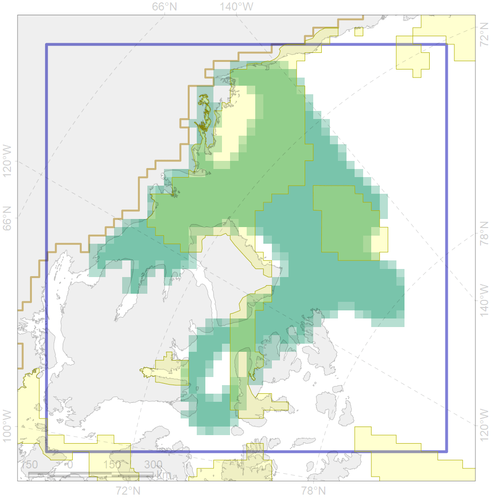

5015

| CF code | 5015 |
| CF name | Beluga of the Eastern Beaufort Sea winter distribution |
| Time Period | 2004-2005 |
| Source(s) | Citta et al 2017 |
| Seasonality | November-April |
| Depth Horizon | 0-100 |
| Methodology | Satellite tagging |
| Use Restrictions | |
| Author Name | Filatova |
| Notes | |
| Scenario’s Target | 0.48 |
| Target Achievement | 0.480 (Scenario: 100.1%) |
| PAC | Share of the Total Amount within the PAC | Share of the Target Achievement for the ArcNet | PAC’s Contribution to the Target Achievement |
|---|---|---|---|
| 59 | 9.5%10.6% | 16.2%17.2% | 16.2%17.2% |
| 62 | 33.8%34.4% | 64.1%64.5% | 64.0%64.5% |
| 63 | 3.5%3.5% | 5.0%5.1% | 5.0%5.1% |
| 64 | 0.1%0.1% | 0.2%0.2% | 0.2%0.2% |
| inner | 46.9%48.6% | 85.5%87.0% | 85.4%86.9% |
| outer | 53.1%56.6% | 14.6%20.2% | 14.6%20.2% |
| † supplement values are for area consistence whereas principal values are for Accenter compatible gridded stats |